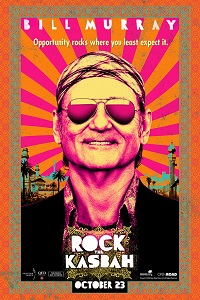

Scouts Guide To The Zombie Apocalypse has a fun ring to it, like the midway mark between Baden-Powell and George Romero. The reality, as Empire discovered on the horror-comedy's LA set, is even more out-there than that. As our top zombologist discovered, there were poop shutes, zombie cats and an undead David Koechner to get to grips with. There is absolutely no cub scout badge for that lot. Click below to take a look and find out all about the physics of poop shute climbing.The film's premise is best summarised by its original working title, Scouts Vs Zombies. The scouts in question are Ben (Tye Sheridan), Carter (Logan Miller) and Augie (Joey Morgan); the zombies are just hungry. The outcome looks like being deliriously gory and potentially a lot of fun. And what of the zombie side of things? "The grunt has got to be real," koechner tells us of proper zombie acting. "You've" got to feel it.” You can feel it too, when Scouts Guide To The Zombie Apocalypse hits UK cinemas on November 6. Check back next week for a second on-set instalment, including a chat with the braaaaiins behind the operation, director Christopher Landon. s
1. I love Bill Murray. You love Bill Murray. We all love Bill Murray. We love him on talk shows. We love him when he pops up in random places, doing random things. But we havent collectively loved a new Bill Murray movie in a long time. Sure, we've celebrated him in small roles: Zombieland, Moonrise Kingdom, even Get Smart. But as the focal point? Hyde Park on Hudson was terrible. The Life Aquatic is everyone's least favorite Wes Anderson movie. And now, Rock the Kasbah might just be the worst yet. It's a horribly misguided idea that never really gets off the ground and yet still finds a way to crash-land, but even criticizing its obvious flaws misses the central, sad point: This movie has too much Bill Murray in it. 2. The key to the guy's resurgence over the last 20 years-the transition from a likable movie star to Americs's Spirit Animal-has been his elusiveness. You can never quite get a firm grip on Bill Murray, which is the way he clearly likes it: The stories of film producers and directors just trying to get ahold of him are as legendary at this point as his wacky random appearances. But it's the same deal with his films. He rarely takes lead roles anymore-I count just six in the 17 years since Rushmore, and that's only if you count the animated Osmosis Jones and this has benefited him greatly. You're always anticipating and left wanting more. But he's able to pop in, give one of his patented reaction shots (no one does them better), and maybe frown a few times or look genuinely sad, and it all works. We rarely spend much time in his presence. But with Rock the Kasbah, we spend the whole movie with him, and that's clearly too long. This is an empty character that he attempts to fill in with flailing schtick. And he's the last actor in the world we want to see resorting to schtick. 3. Murray plays Richie Lanz, a burned-out manager of failed music acts who takes his "star" client, a drowsy lounge singer who also serves as his receptionist (Zooey Deschanel), to Afghanistan for a USO tour. His client freaks out, and steals his money and his passport, and he's thus stuck in a war zone, trying to get out and maybe still make a buck in the process. While he's transporting weapons to a Pashtun village (don't ask), he comes across a female singer with an otherworldly voice (Leem Lubany) and tries to book her on Afghan Star, the country’s version of American Idol. He ends up sleepwalking into a series of dangerous situations he can't quite grasp the gravity of while crossing paths with a professional soldier (Bruce Willis), two opportunistic Americans getting rich off all the death (Danny McBride and Scott Caan), and a glamorous prostitute with, all together now, A Heart Of Gold (Kate Hudson). Meanwhile, while all these white people talk about their problems, a country burns around them, a fact this film only sporadically notices.